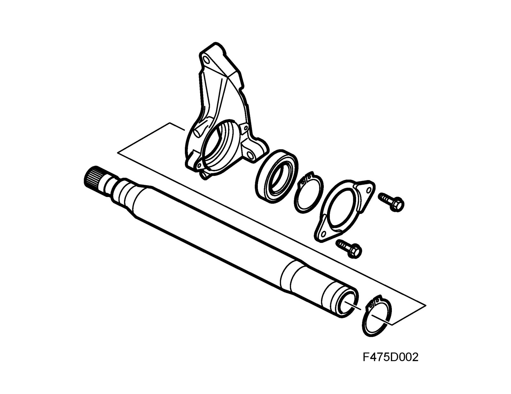

Drive Shafts
Drive shafts
A very rigid intermediate shaft runs from the right side of the differential and is mounted in an extra support bearing attached to the engine block. This means that the drive shafts can be made identical and have the same angle in relation to the wheels. The advantage of this design is that it maintains the directional stability of the car, even during very fast acceleration.